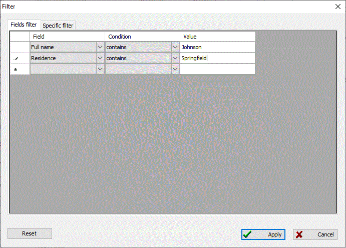

toolbar button, the "Edit\Filter" menu, or use the [Ctrl + F] hotkey.
toolbar button, the "Edit\Filter" menu, or use the [Ctrl + F] hotkey.
You use filtering to limit the number of persons you see at once. Since the database size grows with each new record, eventually one day you may find it very difficult to find the person you need. Here is where filters come in handy.
To set up the filters you use the
toolbar button, the "Edit\Filter" menu, or use the [Ctrl + F] hotkey.
There are two types of filters: standard and additional specific filters. Standard filters are used for any type of record in the database. It is available on the "Fields filter" tab in the filtering dialog. Additional specific filters are used for person records only and are available on the "Specific filter" tab; when you are filtering an already opened person list.
Fields filter work identically on any person records. You select a target field (a column in the database's list) on which you are about to apply the filter, then add the filter condition and value. You can apply several selection criterions when it is necessary.
For example, let's assume you want to select all people with an Johnson-like last name who lived in Springfield. To do this, open the filtering dialog, go to the filter's first row and select "Full name" in the "Field" dropdown list. Set the condition to "Contains", and the value to "Johnson". Then go to the next filters row and set the field to "Residence", the condition to "Contains", and value to "Springfield". This should look like:

Specific filtration is used to improve performance and work efficiently while handling person records. Such a filter has the following selection criterions: sex, is a person alive, patriarch's bookmarks, all name parts, residence and events, and groups and sources. There are masks available when one is filtering by name, life events, or residence.
When processing person records, you can use simple filters along with additional specific filters.